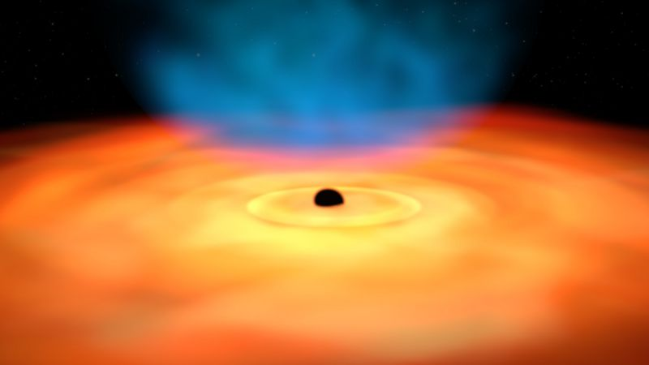
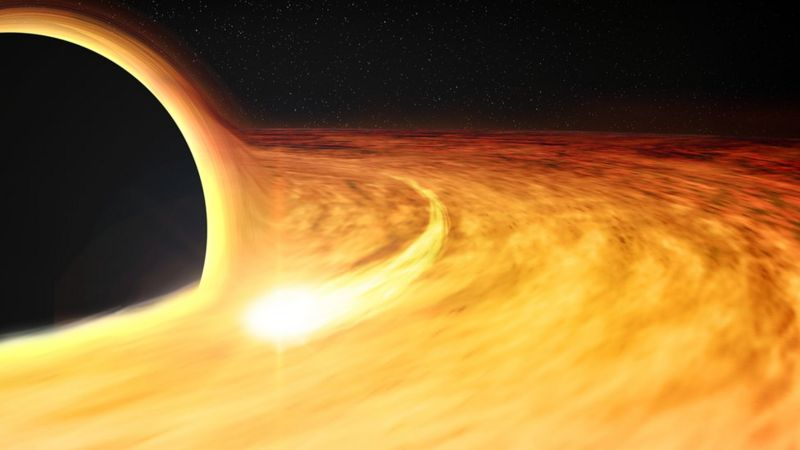

Allison Kirkpatrick, astrofísica da Universidade do Kansas, nos Estados Unidos, liderou a uma equipe de pesquisadores que fez a descoberta, apresentada nesta semana na reunião anual da Sociedade Astronômica dos Estados Unidos.
Kirkpatrick chamou as novas galáxias de "quasares frios". Um quasar é basicamente um buraco negro supermassivo cercado por grandes quantidades de gás e poeira.
O termo quasar significa "fonte de rádio quase estelar". Os quasares podem ser resultado da fusão de duas galáxias e da colisão de seus buracos negros.
Os cientistas acreditam que nossa galáxia, a Via Láctea, está em processo de colidir com sua galáxia vizinha, Andrômeda. Mas você não precisa se preocupar com isso - a colisão deve ocorrer daqui a cerca de 3 bilhões de anos.
Quando isso ocorrer, as duas galáxias deixarão de existir como tal, levando, em vez disso, à criação de um quasar.
A descoberta é um tipo incrivelmente estranho de galáxia, que não havia sido detectado até agora e que muda o que foi entendido sobre a vida das galáxias.
O gás pode ficar no centro de uma galáxia em forma de um disco plano ou superior chamado "disco de acreção", que pode fornecer uma enorme quantidade de energia eletromagnética. Por isso, os quasares têm muito mais luz que uma galáxia normal.
Antes, pensava-se que a formação de um quasar ocorria no estágio "passivo" - ou morto - de uma galáxia, ou seja, quando ela perde a capacidade de produzir novas estrelas.
Porém, Kirkpatrick descobriu galáxias com uma grande quantidade de gás frio, mas que ainda podem formar novas estrelas - mesmo com um quasar em seu centro.
A cientista acredita que os "quasares frios" representam um breve período nas fases finais da vida de uma galáxia.
Segundo a cientista, se compararmos a vida de uma galáxia a uma vida humana, a fase do "quasar frio" pode ser "algo semelhante à festa de despedida de uma galáxia".
Já assistiu aos nossos novos vídeos no YouTube? Inscreva-se no nosso canal!